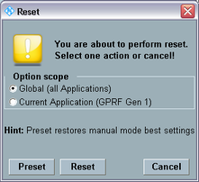
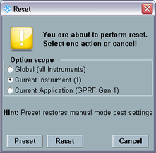

Reset Dialog
The "Reset" dialog forces the software to return to a definite reset/preset state.
To open the dialog box, press the RESET key on the (soft-) front panel, or the button.

Dialog for one subinstrument

Dialog for several subinstruments
The reset/preset can be performed for the entire R&S CMW or it can be limited to the current firmware application.
If the R&S CMW has been split into subinstruments, the reset/preset can also be limited to the current subinstrument.
In addition to the reset and preset states described here, the instrument supports also a factory default state, see "Factory Default".
Sets the instrument parameters to values suitable for local/manual interaction.
In particular, the preset state comprises the following settings:
- All measurements are performed in continuous repetition mode.
- The R&S CMW uses long statistics cycles (for reliable statistical evaluations).
The following R&S CMW settings are not affected by a preset:
- Address information assigned to the instrument (e.g. the IP address)
- The instrument setup
Sets the instrument parameters to values suitable for remote operation.
In particular, the reset state comprises the following settings:
- All measurements are performed in single-shot repetition mode.
- The R&S CMW uses short statistics cycles (for benchmarks).
- In multi-evaluation measurements, some time-consuming evaluations are skipped to gain measurement speed.
The following R&S CMW settings are not affected by a reset:
- Address information assigned to the instrument (e.g. the IP address)
- The instrument setup
- The contents of the status registers